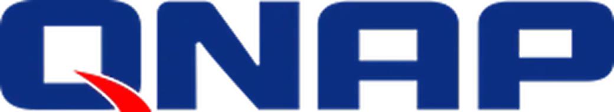
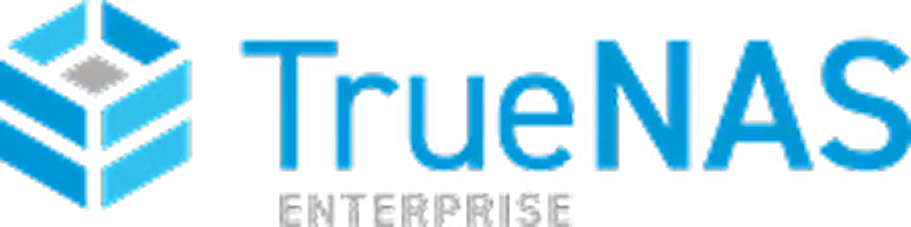
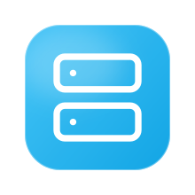
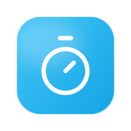
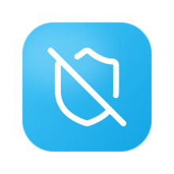
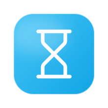

Tecnologias com que trabalhamos




Engenharia de TI que elimina vulnerabilidades antes que elas custem caro.
A DMR não é um suporte que apaga incêndios. Somos a engenharia que impede o fogo de começar. Projetamos e operamos toda a infraestrutura — do cabeamento físico ao monitoramento em nuvem — combinando prevenção, resposta rápida e compliance.
10+ anos
No mercado
Protegendo a operação de empresas em São Paulo.
Não prometemos. Medimos.
Disponibilidade, base atendida e tempo de resposta — os três indicadores que acompanhamos e documentamos em contrato.

99.9%
Uptime
Estabilidade e servidores no ar para que a operação da sua empresa nunca pare.

500+
Clientes ativos
Mais de quinhentas empresas confiam na DMR para manter a própria operação de pé.

20 min
Tempo de resposta
Primeiro retorno em até vinte minutos, com SLA de quatro horas para o atendimento.
Suporte que resolve em minutos, não em dias.
Já teve um chamado de TI que levou uma semana para resolver? Na DMR, incidentes críticos recebem resposta em até 20 minutos e são atendidos dentro de um SLA de 4 horas. Tudo documentado e rastreável.
Mas o melhor suporte é o que você não precisa usar. Por isso fazemos manutenção preventiva e monitoramento 24/7 — para agir antes do problema virar chamado.
20 min
Tempo de resposta
SLA de 4 horas para o atendimento, em incidentes críticos.
Por que 500+ empresas confiam na DMR.
Não vendemos pacote genérico. Diagnosticamos a operação e montamos a infraestrutura que faz sentido para o seu porte, seu setor e seu nível de risco.

Backup blindado contra ransomware
Estratégia 3-2-1: três cópias diárias em duas mídias, com uma cópia offline imutável. Mesmo que o ransomware entre, seus dados não saem.

SLA de verdade: 4 horas
Primeiro retorno em até 20 minutos e atendimento dentro de 4 horas. Sem ticket genérico, sem fila de espera.

Do cabeamento ao firewall
Instalação física, redes, firewalls, VPNs, nuvem e monitoramento 24/7. Uma equipe integrada cuida de tudo, sem terceirizar pedaços.
Co-sourcing com a TI interna
Já tem equipe própria? Atuamos como Nível 3 especializado, complementando o time em vez de competir com ele.
Cada empresa precisa de uma TI diferente. Montamos a sua.
Diagnosticamos a operação e montamos a infraestrutura que faz sentido para o seu porte, seu setor e seu nível de risco.
A TI invisível que custa caro.
Você não percebe — até que percebe. E aí o custo é outro.
3-2-1
Backup blindado
Três cópias, duas mídias, uma offline imutável.

Backup que não restaura
Risco letalUm ataque de ransomware pode custar R$ 350 mil em resgate, mais dias de operação perdida. O backup da maioria das empresas não sobrevive porque está na mesma rede que o ataque criptografa.

Chamado que leva horas
Perda produtivaSua equipe perde 40 minutos por dia com lentidão na rede. Um chamado que demora deixa o time inteiro parado, e o custo aparece na folha, não na fatura de TI.
Operação fora de conformidade
Multa da LGPDMultas de LGPD chegam a 2% do faturamento. A maioria das empresas só descobre que está exposta depois da notificação — quando corrigir já não evita a penalidade.
Qual o tamanho do seu desafio?
Projetos sob medida, focados na maturidade tecnológica e nas demandas de cada modelo de negócio.
- Quero uma solução completa
Pequenas empresas
Sem equipe de TI interna? Assumimos tudo — da rede ao suporte — como se fôssemos o seu departamento de tecnologia.
- Falar sobre co-sourcing
Médias e grandes empresas
Já tem time de TI, mas precisa de especialistas? Atuamos como Nível 3 — co-sourcing que complementa sua equipe sem competir com ela.
- Solicitar auditoria de segurança
Empresas preocupadas com segurança
LGPD, ransomware, vazamento de dados. Se segurança é a prioridade, começamos pela blindagem e construímos a partir daí.
O que nossos clientes dizem
Empresas que confiam na DMR Info para manter suas operações seguras e eficientes
"Trocamos de fornecedor de TI depois de um incidente que travou a produção por um dia inteiro. Com a DMR, isso nunca mais aconteceu — e quando algo dá errado, sabemos que a resposta vem em minutos, não em dias."
"A auditoria de segurança que a DMR fez mostrou falhas que a gente nem sabia que existiam, principalmente relacionadas à LGPD. Hoje dormimos tranquilos sabendo que os dados dos nossos clientes estão protegidos."
"O que mais pesa pra gente é não ter mais que gerenciar fornecedor de rede, backup e suporte separados. A DMR cuida de tudo integrado, e isso sozinho já pagou o investimento em tempo economizado."
Dúvidas resolvidas.
Entenda como funciona o suporte corporativo e a engenharia de segurança da DMR.
Qual é o tempo de resposta para emergências?
Incidentes críticos recebem resposta em até 20 minutos, com SLA de 4 horas para o atendimento, documentado em contrato — sem ticket genérico e sem fila de espera.
Como vocês protegem contra ransomware?
Com a estratégia 3-2-1: três cópias diárias em duas mídias diferentes — NAS local e nuvem criptografada — mais uma cópia offline air-gapped e imutável. Mesmo que o ataque entre na rede, ele não alcança essa cópia.
Vocês fazem instalação física ou só gestão remota?
As duas coisas. Somos uma integradora ponta a ponta: cabeamento estruturado, racks e firewalls na parte física, e depois a gestão digital completa — monitoramento, backup e suporte 24/7.
Já tenho equipe de TI — qual é o papel de vocês?
Atuamos como Nível 3 especializado, em regime de co-sourcing. Complementamos sua equipe interna nos pontos que exigem especialização, sem competir com ela.
Quanto custa? Existe um plano fechado por porte de empresa?
Não trabalhamos com pacote genérico. Cada orçamento é montado depois do diagnóstico, de acordo com o porte, o setor e o nível de risco da sua operação. Solicite uma auditoria gratuita para receber uma proposta sob medida.
Sua infraestrutura de TI aguenta um teste?
Fazemos uma auditoria gratuita da sua rede, servidores, backup e segurança. Você recebe um relatório com vulnerabilidades, riscos e um plano de ação — sem custo e sem compromisso.
Se sua TI passar no teste, ótimo. Se não passar, você vai saber exatamente o que fazer.